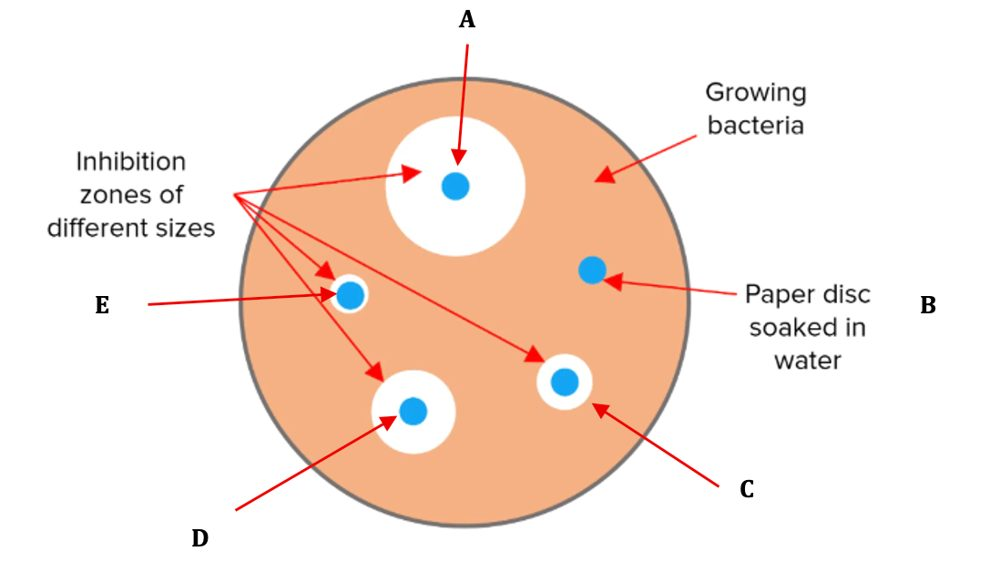
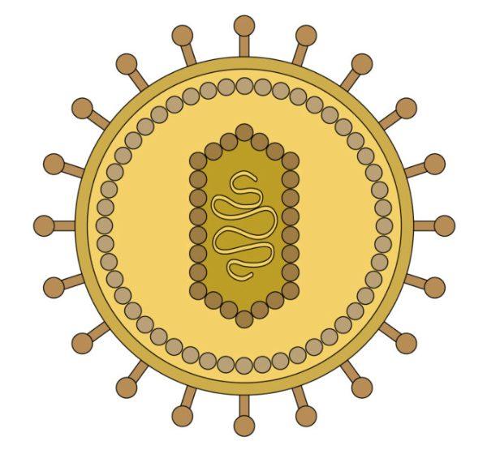

Section A: Multiple choice (12 marks)
Which of the following is an example of a living pathogen?
What is the main function of white blood cells in the immune system?
How do vaccines help protect against diseases?
Which term describes a sudden increase in the number of cases of a disease in a community?
Which of the following correctly describes the role of antibodies?
Which immune system component is part of the first line of defence?
What is the main difference between bacterial and viral infections?
What is the purpose of inflammation in the immune response?
Which of the following is not part of the body's second line of defence?
During a viral outbreak, which is the best way to reduce transmission?
Simon was hiking in the bush when he was bitten by a red-bellied black snake. He was rushed to hospital and given red-bellied black snake antivenom. What type of immunity did the antivenom give Simon?
Antivenom contains ready-made antibodies (passive), given by injection (artificial).
Multiple sclerosis is a disease in which a person's own immune system attacks the myelin that wraps around the axons of nerve cells. Myelin insulates the axon and speeds up the nerve impulse. What is the term for this type of disease?
Section B: Short answer (26 marks)
Define the term "pathogen".
A pathogen is a microorganism or other agent that can cause disease.
Explain two ways that prions and bacteria differ.
Any two, for example:
- Bacteria are cellular organisms, while prions are acellular infectious proteins.
- Bacteria are living organisms that can reproduce on their own, whereas prions are non-living infectious agents.
- Bacteria are much larger than prions.
- Bacteria can be treated with antibiotics; prions cannot.
Question 3 (5 marks)
A student tested the effectiveness of different antiseptics on the growth of E. coli. They created a lawn of E. coli on an agar plate, then dipped sterile discs in different solutions and placed them on the plate. The plate was sealed and incubated at 35 °C for 48 hours. The results are shown below.

Which disc is the control in this experiment? What is a control?
- Control disc: disc B, the paper disc soaked in water (1 mark).
- A control is a standard for comparison in which the independent variable (the antiseptic) is left out, or kept neutral (e.g. water), to show that the results are due to the independent variable (1 mark).
Which antiseptic is the most effective at controlling the spread of E. coli? Give evidence to support your answer.
Disc A (1 mark). It produced the largest inhibition zone, showing the antiseptic was the most effective at stopping the growth of E. coli (1 mark).
This plate was prepared with a lawn of bacteria. Another plating technique is streak plating. When would a scientist use streak plating?
To isolate individual colonies of a single bacterial species from a mixed culture.
Question 4 (4 marks)
The diagram below shows a type of pathogen.

What type of pathogen is it? Give two pieces of evidence to support your answer.
- It is a virus (1 mark).
- It has a central core of genetic material (DNA or RNA) surrounded by a protein coat (capsid) (1 mark).
- It has an outer envelope and/or surface proteins (spikes) used to attach to and enter a host cell (1 mark).
Is the pathogen acellular or cellular? Justify your answer.
Acellular: it has no organelles, nucleus or cytoplasm. It is essentially genetic material in a protein coat.
Describe how vaccines stimulate the immune system.
- A vaccine contains a weakened, killed, or part of a pathogen: its antigen (1 mark).
- B cells and T cells encounter this antigen and launch a primary immune response (1 mark).
- This produces memory B cells (and memory T cells), which stay in the body ready to start a faster, stronger secondary response if a real infection happens (1 mark).
Is the third line of defence specific or non-specific? Explain your answer.
It is specific (1 mark). It involves the adaptive immune system (B and T lymphocytes), which recognise and target specific antigens on a particular pathogen (1 mark).
Macrophages are white blood cells made in the bone marrow. During an infection, they can move into the tissues and phagocytose invading microorganisms. Describe what happens when a macrophage meets and removes an invading bacterium. (You can sketch an annotated diagram on paper.)
- Engulfing (phagocytosis): the macrophage extends its membrane (pseudopods) around the bacterium and engulfs it into an internal vesicle called a phagosome (1 mark).
- Digestion: the phagosome fuses with a lysosome, which contains digestive enzymes (1 mark).
- The enzymes break down and destroy the bacterium (1 mark).
Question 8 (6 marks)
On a school trip to Asia, a student began to feel ill. His symptoms included fever, chills, headaches, loss of appetite and muscle pain. He was diagnosed with malaria. The pathogen that causes malaria is eukaryotic and unicellular, and lives in a liquid environment. The student had been bitten by an Anopheles mosquito, which passed the malaria pathogen to him.
- What type of pathogen causes malaria?
- What mode of transmission infected the student?
Suggest two actions to prevent future outbreaks.
Any two:
- Use mosquito nets and repellents to prevent bites from the vector.
- Drain stagnant water where the mosquito vector breeds.
- Use preventive antimalarial medication.
- Increase community education about the disease.
Would antibiotics be the correct treatment? Explain.
No (1 mark). Antibiotics treat bacterial infections. Malaria is caused by a protist (a eukaryotic pathogen), which is not affected by standard antibiotics; specific antimalarial drugs are needed (1 mark).